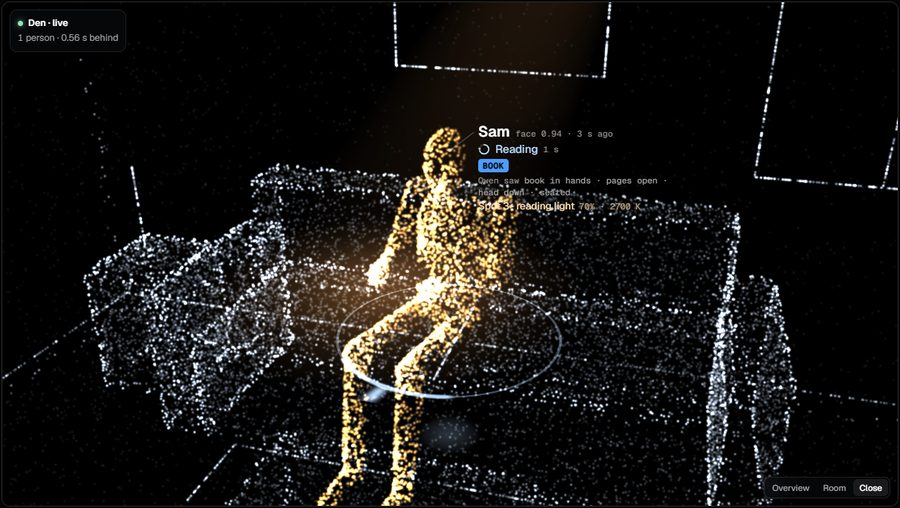

A · Caption Open prototype
The live body with a System caption beside its head. Qwen's word has a ring that drains over its 10 s life and goes the moment it expires. Up close, "Qwen saw" lists the model's visible basis in place of a confidence it doesn't give.
- Readable
- One place to look, at every zoom; it says less when zoomed out. With two people the captions can crowd at overview. On Home's phone layout today, the room is a thin strip under the sheet, so the caption needs the room to get taller there.
- Honest
- The expiry is visible and never extended. A standing guest gets their posture, not someone else's answer. The light line appears only when the spot's subject binds to this track. The risk is that a word next to a body reads as fact, and the ring and "Qwen saw" are what push back on that.
- Fast
- The DOM changes at the event rate. Each frame does one projection per person. It runs in Home's real browser test on desktop and phone.
- Delight
- An answer lands with a pulse from the person to their caption, which is the moment the house "gets it".
Misses: where the time goes, why the other spots refused, and what just happened.